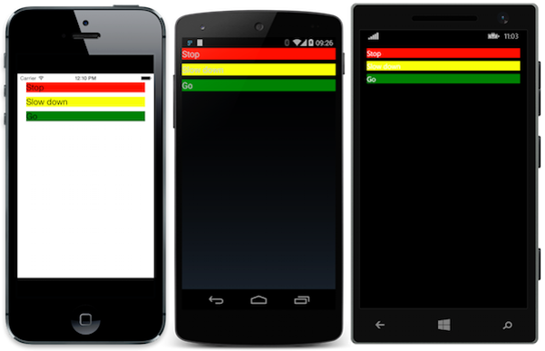
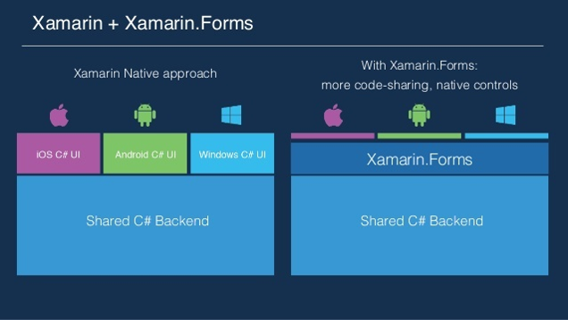

- What is Xamarin.Forms?
- Problems when integrating SignalR
- A code example
What is Xamarin.Forms?

- A cross-platform UI toolkit for Android, iOS, Windows Phone and UWP
- Development can be done with Visual Studio or Rider
- Standard programming language is C#
- You can use XAML and MVVM
- For platform specific projects use Xamarin.Android etc.

Problems when integrating SignalR
- Only few information available about it
- Use the right client package
- Connect to your local IIS Express
Localhost solution for Android